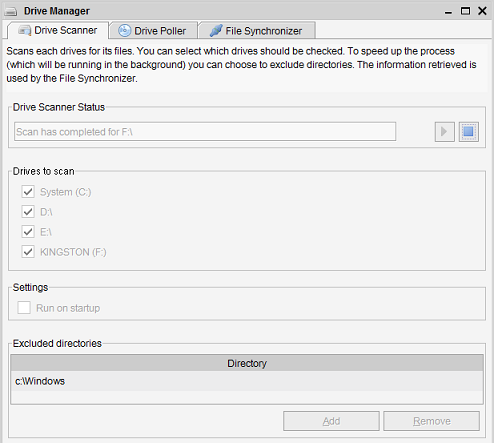
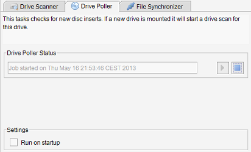
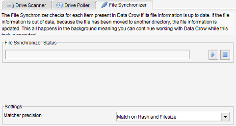

Drive Manager
Menu path: Tools > Drive Manager
There are modules which contain items representing a file (or a directory)
such as the Music Album and the Image module. The Drive Manager ensures the file information
of these items remains up to date with the file information of your hard disk, CD or any other
kind of drive. Using this tool you don't have to worry about updating Data Crow while moving
a file to another disk or directory. Data Crow will automatically update the item representing
this file.

There are three jobs available for this purpose. These jobs run in the background,
meaning you can continue working with Data Crow while these jobs are running.
Drive Scanner
The Drive scanner scans drives for its files. It stores the file information in the temp folder
of Data Crow (<user directory>/temp). The File Synchronizer uses this information
to do its job.
Drives to scan
Here you can select which drives should be included in the scan.
Note: that in case you do not see any drives you can
indicate directories to be treated as drives. This can be done here.
Excluded directories
If you are certain a directory does not contain any relevant information for Data Crow you
can exclude it from the scan. For Windows users it would for example make sense to exclude
the Windows installation directory.
Drive Poller
This is a very simple job which checks for new drives being mounted or drives being dismounted.

When a new drive/disc is mounted a Drive Scan is started (see previous chapter) and Data Crow
will use the information from this drive.
File Synchronizer
Synchronizes the file information of items part of Data Crow with the information from your
drives.

When for example a file has been moved to another drive or directory the File
Synchronizer will automatically update the item representing this file (a book, a software item, etc).
Matcher precision
Indicates what information of the item is used to locate the new location of the file. By default
the precision is set to the highest as this is the safest way to uniquely identify the file.
As information, such as the file hash (which is technical information, generated and stored by Data Crow,
to uniquely identify a file) might be missing you can choose to match on for example 'filename' and
'file size' or even solely on 'filename'.